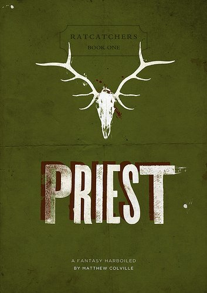
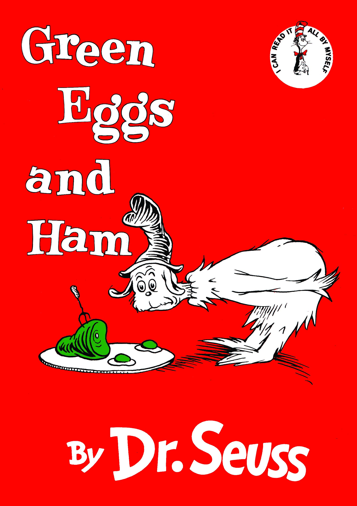
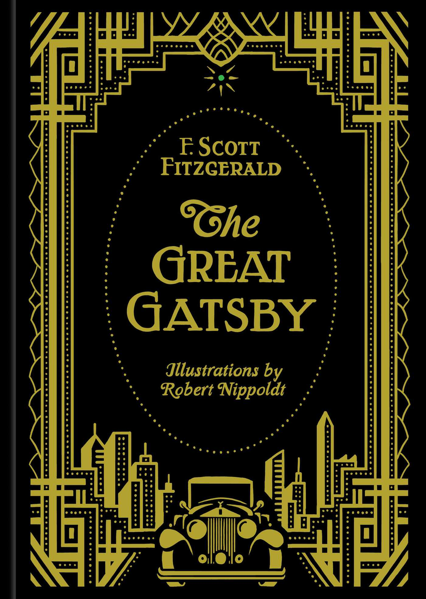

Assignment 4.2: Build a Web Page Exercise - Part 4
Priest

(author: Mathew Colville)
This is the cover of the novel, "Priest". I love the minimalist design.
Green Eggs and Ham

(author: Dr. Suess)
This is the cover of the children's book, "Green Eggs and Ham". I love the bright color design; it tugs at a nostalgic soft spot for me.
The Great Gatsby

(author: Scott F. Fitzgerald)
This is one version of the cover of the iconic novel, "The Great Gatsby". I like how classy this particular design is while still representing things like Gatsby's car that are central to the plot and themes of the story.